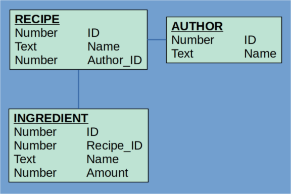

Maven:
<dependency>
<groupId>org.hrorm</groupId>
<artifactId>hrorm</artifactId>
<version>0.10.0</version>
</dependency>
Hrorm is an Object Relational Mapper (ORM) for Java. Hrorm is a concise, declarative, type-checked library for the creation of Data Access Objects (DAOs). Hrorm requires no external configuration or dependencies.
Hrorm exists to reduce the amount of boilerplate code (in both Java and SQL) you have to write to manage persistence of Java objects to a relational (SQL) data store without inflicting you with XMLosis or annotationitis.
The hrorm DaoBuilder
class provides methods to describe the relationship between an object and its backing table. Once your
DaoBuilder objects are defined and you have a java.sql.Connection, you can
create Dao objects
for performing CRUD operations.
Hrorm is opinionated about how Java object models and SQL schemas should be designed. It will not play well with all schemas and objects. If you want freedom, look elsewhere.
Suppose you are working on a program for managing recipes that has a domain model that looks like this.
class Author {
Long id;
String name;
}
class Recipe {
Long id;
String name;
Author author;
List<Ingredient> ingredients;
}
class Ingredient {
Long id;
String name;
long amount;
}
You might ask yourself: how will I persist such a rich, complex model? And you might think ...
I know, I'll put everything into a List and call serialize()
and write that to a file on disk.
How many recipes and simultaneous users are we expecting to support anyway?
But instead, you come up with the following relational schema.
Because you are the absolute Empress of Overkill.
Some might think to use Hibernate or
Mybatis or something, but no, you
are a real glutton for punishment, so you decide to use hrorm and write some code like this,
which defines in terms of hrorm DaoBuilder objects the relationship
between the database schema and the Java object model.
Disclaimer: Yeah, I assume that your schema has some sequences that are not in the picture above. Also, you should have created getters and setters for all of the fields on your objects or used Lombok or something.
DaoBuilder<Author> authorDaoBuilder = new DaoBuilder<>("AUTHOR", Author::new)
.withPrimaryKey("ID", "AUTHOR_SEQUENCE", Author::getId, Author::setId)
.withStringColumn("NAME", Author::getName, Author::setName);
DaoBuilder<Ingredient> ingredientDaoBuilder = new DaoBuilder<>("INGREDIENT", Ingredient::new)
.withPrimaryKey("ID", "INGREDIENT_SEQUENCE", Ingredient::getId, Ingredient::setId)
.withParentColumn("RECIPE_ID")
.withStringColumn("NAME", Ingredient::getName, Ingredient::setName)
.withIntegerColumn("AMOUNT", Ingredient::getAmount, Ingredient::setAmount);
DaoBuilder<Recipe> recipeDaoBuilder = new DaoBuilder<>("RECIPE", Recipe::new)
.withPrimaryKey("ID", "RECIPE_SEQUENCE", Recipe::getId, Recipe::setId)
.withStringColumn("NAME", Recipe::getName, Recipe::setName)
.withJoinColumn("AUTHOR_ID", Recipe::getAuthor, Recipe::setAuthor, authorDaoBuilder)
.withChildren(Recipe::getIngredients, Recipe::setIngredients, ingredientDaoBuilder);
That's pretty painful. Thank God for autocompletion. Once that's done, and assuming you have some way
to make
a java.sql.Connection object now you can actually make a Dao. Then you can
write some code like this.
Connection connection = // somehow this happened
// Let's make a new author object!
Author juliaChild = new Author();
juliaChild.setName("Julia Child");
// hrorm makes it easy to persist
Dao<Author> authorDao = authorDaoBuilder.buildDao(connection);
authorDao.insert(juliaChild);
// now for Julia's famous Beef bourguignon
Recipe beefStew = new Recipe():
beefStew.setName("Beef Stew");
beefStew.setAuthor(juliaChild);
// needs some ingredients
Ingredient carrots = new Ingredient();
carrots.setName("Carrots");
carrots.setAmount(4L);
Ingredient onions = new Ingredient();
onions.setName("Onions");
onions.setAmount(2L);
Ingredient beef = new Ingredient();
beef.setName("Cow");
beef.setAmount(1L);
Ingredient wine = new Ingredient();
wine.setName("Red Wine");
beef.setAmount(10L);
beefStew.setIngredients(Arrays.asList(carrots, onions, beef, wine));
// with hrorm, we just persist the recipe, it will take care of
// the ingredients for us
Dao<Recipe> recipeDao = recipeDaoBuilder.buildDao(connection);
recipeDao.insert(beefStew);
// that was perfectly cromulent
Of course, a Dao can do more than just insert. A Dao can also
update, delete, and various forms of select.
And really, that's all there is to hrorm.
Hrorm is opinionated about how entities should be built. It will not work with any object model or schema. However, many of the opinions that hrorm has are good practices to follow, regardless of how database records are translated to and from objects.
Here's the skinny about hrorm entities. (Entities means the things being modeled, either in their Java class representation, or in their database table representation.)
Entity models that do not follow the practices above will be difficult or impossible to support using hrorm.
Hrorm is not an all-singing, all-dancing, all-cooking-a-five-course-meal framework. It's a small
library for reducing the amount of time you spend writing select FOO, BAR from BAZ
and ResultSet rs = statement.execute(). It does not even attempt to go into territory
that many other ORM tools do.
This is only a partial list of all the things hrorm will not do.
Dao it's because you want to read or write something in the
database. (But see here).
As mentioned above, many ORM tools are packed with features. Some of them are even useful. Here's a comparison with some well-known ORM tools.
| Hibernate | Mybatis | hrorm | |
|---|---|---|---|
| Packed with features | Yes | Yes | No |
| Wide community support | Yes | Yes | No |
| Battle tested in major enterprise deployments | Yes | Yes | No |
| Has a sweet icon and other branding | Yes | Yes | No |
| Supports your schema and object model how you want it | Maybe | Somewhat | Absolutely not |
Sometimes when using an ORM tool, development goes great right until you fall off a cliff. The ORM tool takes care of many details about state tracking, caching, SQL generation, transactions, etc, and everything is just fine. But then you need to do something that your ORM tool does not support. Perhaps not a large thing, perhaps just optimize one particular query or other. And you find, you cannot do it. Yes, you can optimize the query, but there's no way to inject that logic into the framework. And if you just have that query outside the framework, then you cannot integrate it with all the caching, state-tracking, transaction managing stuff your framework provides you.
You just fell off the cliff.
It's like the old joke about the traveler asking the farmer how to get to some village in the area and receiving the reply: "You can't get there from here."
Hrorm is a minimal library, not a maximal framework. It should be possible to integrate custom features you
need in your application easily. To make Dao objects, all you need is a vanilla
java.sql.Connection. You can freely mix calls to hrorm objects with custom logic
for managing transactions or querying the database or anything else as you see fit.
Hrorm will not fall off a cliff. It starts at the bottom, and stays there.